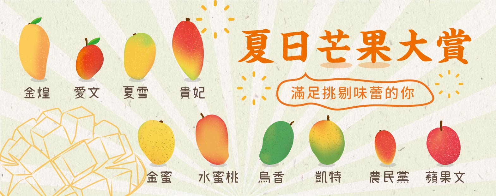
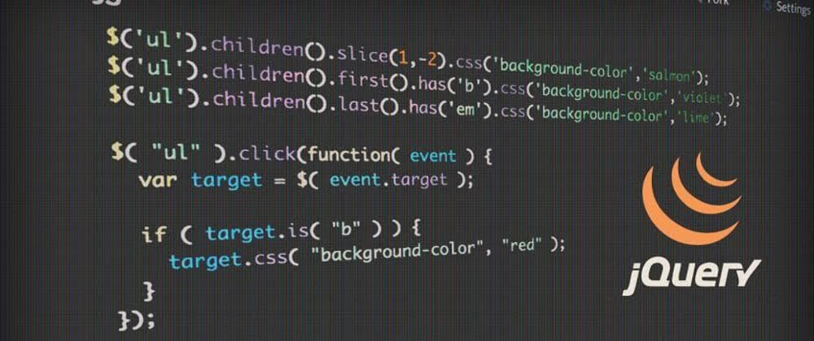
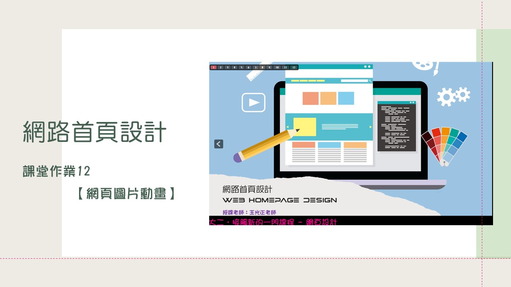

網頁設計作品回顧
-
02-項目符號與編號的設定
學習重點
學習心得
- 對於剛開始學習網頁程式設計的我們，
這真的是很難的一門課程。
幸好，大一的時候有學過Kotlin，
所以對一些基本的語法及概念有相對的了解。
-

03-表格的設定
學習重點
- 學習表格的設定
- 練習項目符號及編號的設定
- 組合選擇器的使用
學習心得
- 這一堂課延續了上一堂的課程，
這門課學習如何運用網頁製作表格。
這讓我們知道以後不用再擔心，
因為轉檔或軟體不同而位移。
-
04-盒子模型與外部字型
學習重點
學習心得
- 這一堂課讓我們學習如何把不同的字體，
套入網頁設計當中。
再也不用跟表格一樣擔心，
因為轉檔或軟體不同而跑掉或無法出現。
同時，透過這些名言佳句，
讓我們再一次的思考我們的人生。
-

05-javascript入門
學習重點
- javascript語法與結構
- Javascript函數
學習心得
- 這一堂課進到一個比較新的
領域「javascript」。
這是程式設計裡面的一部分，
是在學習如何運用這個語法，
把所有的指令寫出來。
只要有一個地方錯誤，整個網頁就會出不來，
這是一個考驗耐心及細心的時候了。
-
06-javascript流程控制
學習重點
- Javascript流程控制if與switch
- HTML表單
學習心得
- 這一堂課延續上一堂的javascript。
學習如何模擬線上購物的流程，
及如何把資料彙整到表格內，
一樣的~不能出錯，
只要有一個地方錯誤，整個網頁就會出不來。
-
08-RegExp物件
學習重點
- Javascript流程控制if與switch
- HTML表單
學習心得
- 這一堂課進到另一個新的
領域「RegExp」。
這也是程式設計裡面的一部分，
是在學習如何運用這個語法，
去搜尋我們要的關鍵字。
-

11-jQuery應用02
學習重點
- jQurey基礎入門
- jQurey的事件與特效
- jQuery的設置屬性 attr()
學習心得
- 這一堂課進到最後一個
領域「jQuery」。
這也是程式設計裡面的一部分，
是在學習如何運用這個語法，
將圖層家疊上去。
-

12-網頁動畫
學習重點
學習心得
- 這是本學期的最後一堂課，
經過一個學期的學習下來，
其實學到蠻多很實用的東西，
不管是怎麼樣架設網頁、網頁的文字編輯，
圖片表格設計等等...，這些都是對於我們
未來非常有幫助的，未來是科技的時代，
我們應當學習這些知識，來充實自己，
並且讓自己有一技之長。
感謝老師一學期的授課教導！